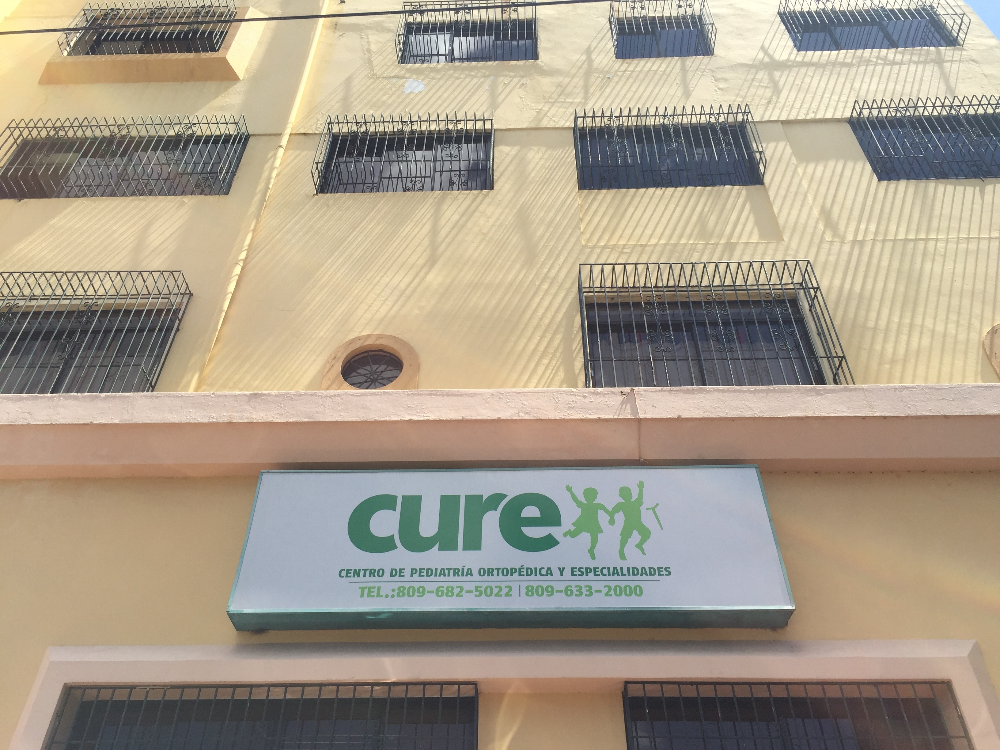
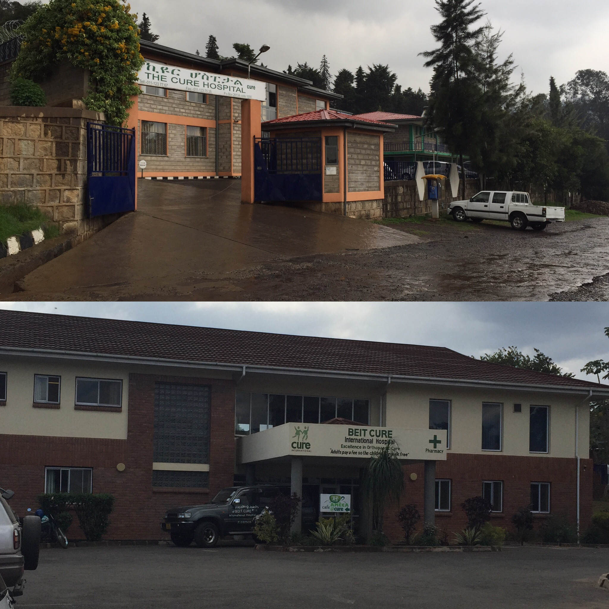
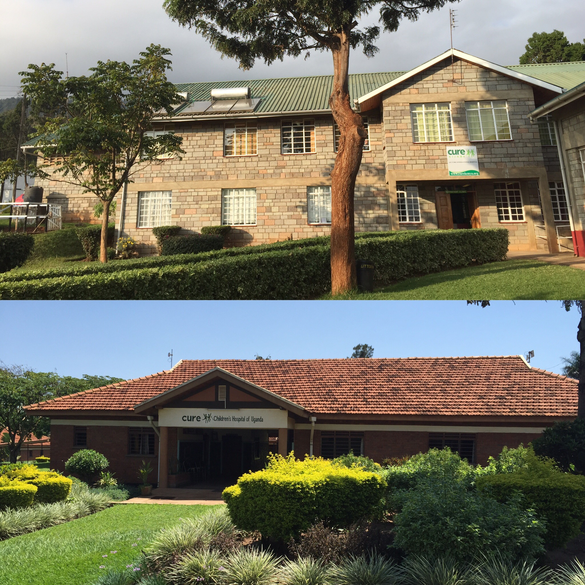
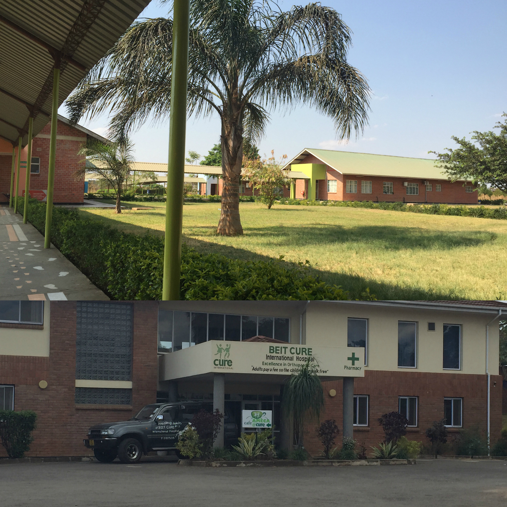

My life outside of work is made up of video games, board games, crocheting, friends, and church.
My Nintendo switch, a scarf in progress and a good audio book are never too far away when my boyfriend and I go on roadtrips to visit family, see new places, or visit friends.
As a Programmer Analyst at Messiah College I work on internal applications for the benefit of faculty,
staff and students. My job is to take on problems and work with the client to solve their problem.
Some of the projects I've worked on during my time at Messiah College, include:
JANUARY 2016 - PRESENT
During this Fellowship I traveled to six of CURE's Hospitals, installing a new wifi system
and doing general IT work for the hospitals as was needed. I went to CURE's
Hospitals in, the Dominican Republic, Ethiopia, Malawi, Kenya, Uganda and Zambia.
CURE International has a hospital in each of these countries, and I installed a
wifi network in each hospital made strides to get the hospitals ready for the
open source Hospital Information System (HIS), HospitalRun. To learn about HospitalRun
visit: http://hospitalrun.io/
MAY 2015 - SEPTEMBER 2015
During my senior year of college I was working on a Hospital Records Software called HospitalRun. As part of my senior capstone class I worked on a piece of this software to help the CURE Hospitals keep track of ministry data. Currently they keep track of this data in spreadsheets, and we were helping them create an interface that made it much more user friendly.
JANUARY 2015 – MAY 2015
As a workstudy in the Messiah College Help Desk, I was expected to go where I was needed. Typically I was asked to help troubleshoot users problems, many times this meant going to their office and sitting with them until one of two things happened, I solved the problem, or I could accurately relay a more robust picture of the problem to my boss. I was initially hired because of my understanding of Macs, and this was what I was mostly asked to work on. Through my time at the Help Desk I learned a lot about how to work with people, and how to help users solve their problems.
OCTOBER 2012 – MAY 2015
I graded assignments for Professor Scott Weaver's Web Development 1: Client Side class. I also watched the class when Professor Scott Weaver had to be out.
FEBRUARY 2014 – MAY 2015
The Intelligent Water Project is a system that takes advantage of the existing GSM network in Africa to monitor the functionality of village hand pumps and sends SMS Alerts to stakeholders in the event of a failure. I worked on the SMS transport layer. This required creating a combined hardware/software solution that could have been installed in Ghana that moved SMS messages from the remote pump monitors to the web back end and from the web back end to the stakeholders.
SEPTEMBER 2014 – DECEMBER 2014
I talked to customers, worked with them to understand their reason for coming into the shop, helped them figure out which computer best fit their needs. Part of this job was becoming an Apple Sales Professional.
MARCH 2011 - AUGUST 2012
I did some coding, but this first internship taught me new ways to research, and I also learned a lot about the industry of software development.
SEPTEMBER 2010 - JANUARY 2011
Computer and Information Systems: Computer Science
Messiah College
Mechanicsburg, Pennsylvania
GRADUATED IN MAY 2015
Deans List - Spring 2015
Study Abroad
Wesley Institute
Sydney, New South Wales, Australia
JULY 2013 - NOVEMBER 2013

My time spent in the Dominican Republic, though short, was amazing. I had the opportunity to
watch my first surgery, and I learned from two amazing fun co-workers how to do my installations for the
rest of the summer. This trip was my first CURE Hospital, and will always be one of my favourites!
DR

CURE Ethiopia and Beit CURE Malawi
This trip was my first trip to Africa, and my first trip with CURE, alone. I hopped on a plane in
Harrisburg, PA and landed in Addis Ababa, Ethiopia. I knew very little about what I was getting myself
into. I waited at the airport for my driver, hoping he would know who I was! Then the adventures began.
Once my two weeks in Ethiopia were over, I made my way to Blantyre, Malawi! This hospital was my favourite
of the summer. The people were kind and loving. The installation did not go as planned at all, but I
learned to adapt very quickly! And just as fast as it began, it was over. I was on a plane back to the USA,
waiting for my next trip.
ETH/MAL

AIC-CURE Kenya and CURE Uganda
My time in the USA before I flew to Kenya went faster that I thought was possible. One minute I was tired,
and jetlagged. Then all of a sudden I was on a plane to Kenya! When I got to Kenya, I knew pretty much what
I was getting myself into, I'd talked to everyone, and I'd been to Africa before, so how hard could it be?
God tested my patience and my ability to be alone in Kenya. Then my time was over, and I was flying to Uganda.
I was ready, this was my fifth CURE Hospital, I should be good at this by now! I know the drill, get the information, and
get to the installation! Wow, I could not have been more wrong. God taught me humility in Uganda. But
even through that, suddenly I was on a flight home. Back to Harrisburg, back to HQ, back to "normalcy".
KEN/UGA

Beit CURE Zambia and Beit CURE Malawi
It's been a few months now since I was in Zambia and Malawi, but I'm finally ready to write a little about my trip.
I can not believe that I spent the summer traveling around the world. I spent lots of time over the last few months
thinking about how God changed me in Zambia. One of the big changes I see in myself is the idea that I don't need
recognition for the work that I do. During my time in Zambia I had the opportunity to see a group of Plastic Surgeons
get total recognition for the surgeries that they did, and at the time I felt a little sad that no one noticed the work
that I was doing. But through much reflexive thinking I realized that I need to believe that the work I had the
chance to do was important, more important that anyone noticing me, or the work I did.
ZMB/MAL
Created by BLACKTIE.CO